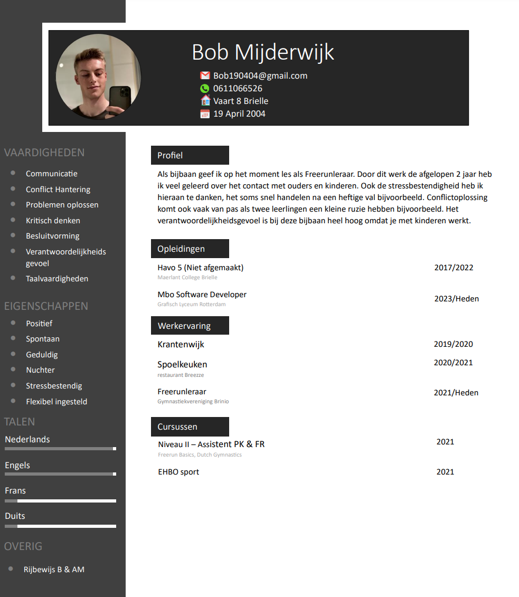

Wie ben Ik
Hoi!
Hier ga ik u wat meer vertellen over wie ik ben, wat mijn hobbies zijn en laat ik je mijn cv zien.
Ik ben Bob Mijderwijk.
zoals je ondertussen weet studeer ik softwaredevelopment op het grafisch lyceum in rotterdam.
Ik ben 19 jaar oud en jarig op 19 april 2004
ik woon in het prachtige kleine dorpje brielle
Mijn hobbies zijn erg uitlopend,
Ik houd van computers en programmeren uiteraard.
maar wat ik misschien nog wel leuker vind is Freerunnen en Urbexen. (urban exploring)
hiervan maak ik vaak videos voor youtube
Ook ben ik een grote muziek fan, ik luister het liefst de hele dag muziek.
Ook houd ik heel erg van motoren. en hoop over een jaar eindelijk mijn eigen te kunnen kopen
Ook vind ik het super leuk om leuke dingen te doen met mijn prachtige vriendin :)
Grafisch lyceum
Ik zit nu in jaar 2 op het grafisch lyceum Rotterdam.
Wat ik persoonlijk heel fijn vind aan deze opleiding is dat je eigenlijk vooral praktijk gericht mag werken en vrijheid krijgt om de projecten creatief te interpreteren.
verder vind ik het fijn dat alle docenten erg behulpzaam en aardig zijn. Hier door is de sfeer op school elke dag ontzettend prettig en geeft het een veilige sfeer.
Programmeren
Ik ben begonnen met programmeren in het 5e jaar van mijn havo opleiding bij het keuze vak informatica.
Hier moesten wij allerlij dingen doen zoals websites maken maar ook games maken.
Dit vond ik zo leuk dat ik sinds toen websites wou gaan bouwen en dus software developer wou worden.
Ik zou nog beter willen worden in het responsive aken van websites (laten werken op verschillende soorten en maten apparaten)
en in het annimeren van elementen.
Freerunning
Freerunning ben ik gaan doen toen mijn vriend in de 1ste klas van de Havo mij eraan voorstelde.
Hij wilde erg graag op les in brielle. Ik vond het altijd al leuk om op dingen te klimmen maar wist niet dat hier een sport voor was.
Zo ben ik terecht gekomen bij brinio. een vereniging waarbij ik in mijn jeugd al is geturnt had.
Nu bleek de leraar van het freerunnen een youtuber te zijn die mijn vriend kende, Tim Tygran.
Tim was voor de loop van 3/4 jaar onze leraar. in deze periode stopte hij met zijn toenmalige kanaal genaamd seekerz en begon zijn eigen kanaal.
Dit zorgde ervoor dat hij helaas geen tijd meer had voor het lesgeven. Zo ben ik met een vriend gaan overleggen en hebben de keuze gemaakt te gaan helpen met de lessen.
Dit zorgde ervoor dat ik de nodige ervaring op deed om eventueel ooit de lessen over te nemen.
Dit gebeurde, Tim moest stoppen, Wij deden een cursus tot docent freerunning bij kevin alsemgeest
(Team NL freerunning 3th speed 2019)
spoel 2 jaar verder door en ondertussen geef ik al meer als 2 jaar les en heb ik al 7 jaar freerun ervaring.
Urbex
Urban Exploring is een van de nieuwere hobbies die ik ontdekt heb. urbexen is een lastige hobbie omdat verlaten locaties vaak niet te vinden zijn.
Dit is omdat de urbex community zijn verlaten locaties graag zo geheim mogelijk wil houden zodat mensen de locaties beter intact houden of niks slopen.
bij urbexen is het de bedoeling dat niemand kan zien dat jij binnen bent geweest en dus alles hetzelfde laat als toen je er kwam.
Hierom is het dus erg lastig om locaties te krijgen of vinden. in nederland heb je vrijwel geen urbex locaties omdat alles meteen word afgebroken.
Je moet dus naar het buitenland voor deze hobbie.
Pas geleden ben ik met een fotograaf naar belgie geweest om daar een verlaten industrie terein te bezoeken. daarvan zijn vrijwel alle foto's op deze site.
Om locaties te krijgen moet je dus contacten leggen, contacten leggen kan alleen als je wat naar de tafel brengt, zoals mooie foto's of bijvoorbeeld je eigen gevonden locaties.
Hierom vind ik dit ook een hele leuke hobbie.
Youtube
al mijn hele leven vind ik het leuk om content te maken, tot niet eens een jaar geleden had ik geen idee hoe en wat ik wou filmen alleen...
Toen ben ik mijn freerunskills en eindelijk verkregen rijbewijs is goed van pas laten komen en ben ik zogenaamde "journeys" gaan doen. ondertussen heb ik daar van 4 videos gemaakt.
een kleine overview daarvan zie je op de homepage. Ik vind het nadenken over shots en het alvast in elkaar plakken van de video terwijl ik een video aan het filmen ben erg leuk om te doen.
zodra ik een motor heb wil ik daarvan ook videos gaan maken om te documenteren hoe het is om motor te rijden op de nederlandse wegen.
(youtube kanaal staat in de footer)
CV
Mijn cv
klik om te openen

.jpeg) Contact
About
Projecten
Home
Contact
About
Projecten
Home